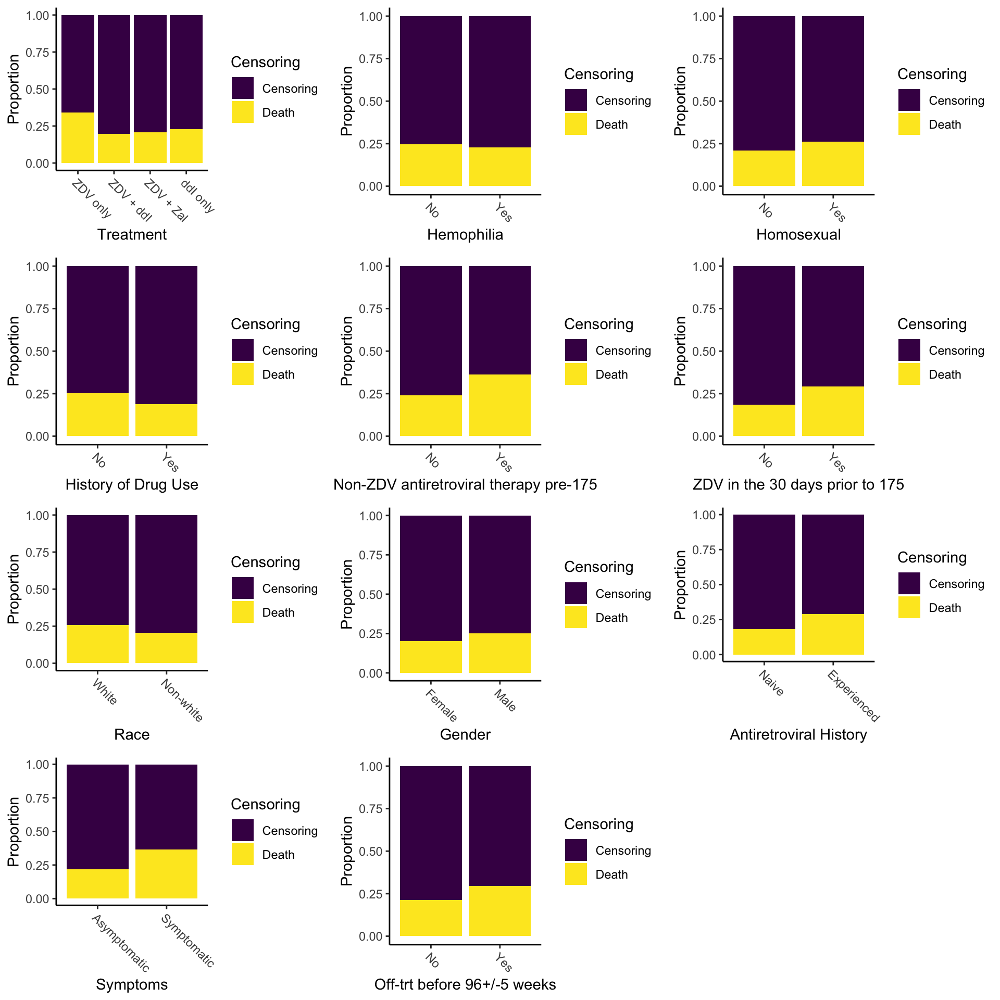

To get a idea of some of the factors that affect treatment of AIDs,
we looked at a dataset published in 1996 by the AIDs Clinical Trials
Group. The study where these data were collected compared 4 different
AIDs treatments, but additionally this dataset contains information on
21 other predictors of death due to AIDS for the 2,139 study
participants. The primary column of interest is cid
(censoring indicator), which indicates whether or not the person died
within the period of observation. A detailed description of the dataset
can be found in the UC
Irvine Machine Learning Repository.
Having a look at some of the categorical variables in the dataset, most do seem to be related to death due to AIDs, which we can see by the differing proportions of death between groups. The exceptions are hemophilia and perhaps race, which have little or no difference between groups. As we might expect, patients who had previously received some type of treatment (Non-ZDV antiretroviral therapy pre-175, ZDV in the 30 days prior to 175, Antiretroviral History) had higher death rates than those who had not, presumably because patients who had previously received treatment and still met the study inclusion criteria were more resistant to treatment. Also of note, is that just from this one plot we can see that the “ZDV only” treatment performed worse than the other three, which intuition is confirmed by the results of the original study.
